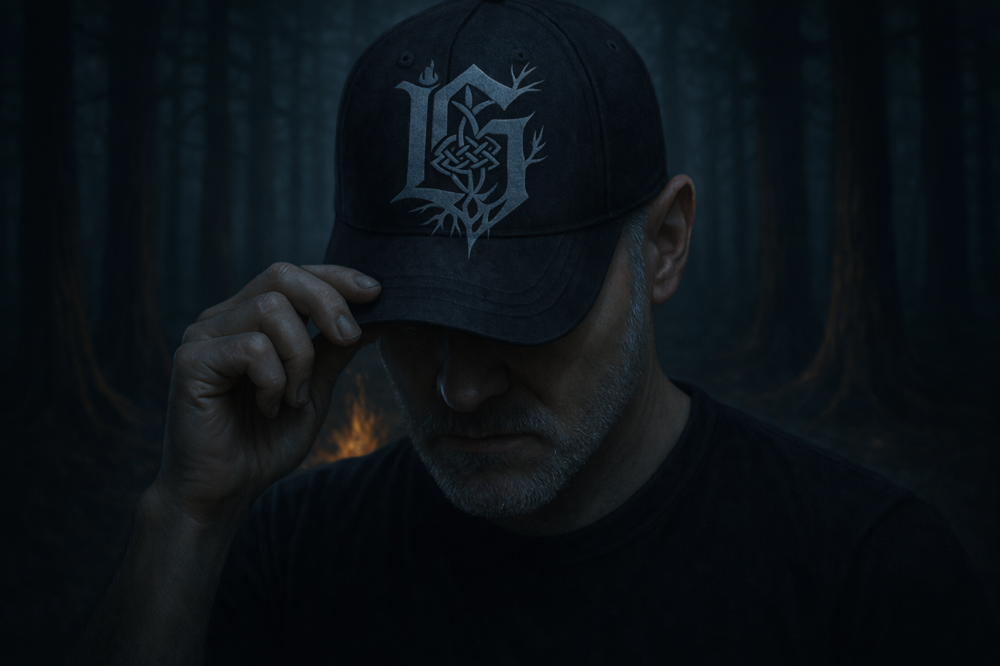
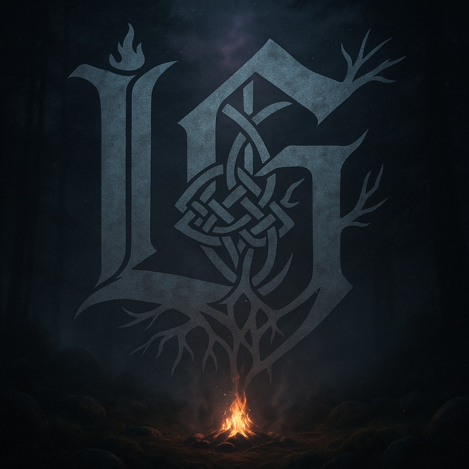
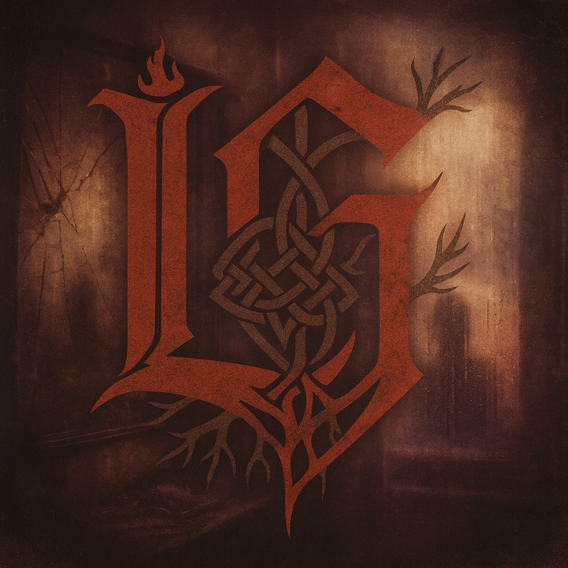
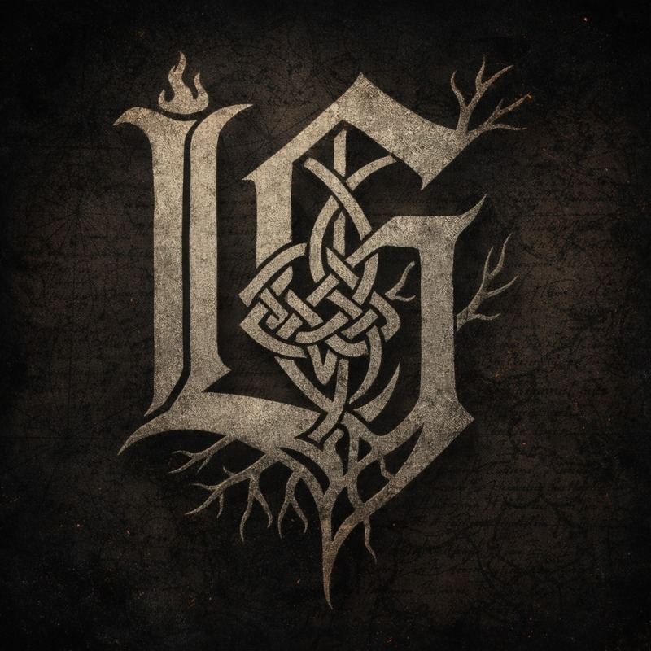

About Lazarus Grimm — Nu-Metalcore & Conscious Hip-Hop Artist

Lazarus Grimm
An independent artist creating nu-metalcore with a hint of conscious hip-hop, rooted in lived faith, personal survival, and a refusal to look away from what’s broken.
There wasn’t just one version of me that disappeared. There were several.
As a child I hid. Stayed silent. Stayed in the forest that surrounded our home, doing anything I could to not be around my stepfather, whose anger and intimidation filled the house and kept all of us on edge. He held a Bible in one hand and a wire hanger in the other. He used scripture the way other men use fists. My mother’s spirit went quiet. My brother was driven to the edge. I learned early that survival meant becoming invisible.
As a young adult I checked out in a chemical haze. It didn’t matter what chemical. Anything I could get my hands on to not feel or deal with the pain for a while. Later, untreated trauma and PTSD kept steering my choices, and I wandered through life detached, unreachable emotionally and spiritually. Once I got clean I shifted into thinking over feeling, keeping my mind and myself so busy I didn’t have time to feel. I built a machine. The machine went to work, wore a convincing smile, and even laughed when it seemed appropriate. But inside I was gone.
Think, don’t feel.
Feelings were dangerous.
Feelings would destroy me.
There was a moment in the wreckage where I almost didn’t come back. I had the plan. I had the steel in my hand. But God held my hand from the flame and told me vengeance is a lie. That was the first time I understood that surviving the darkness was just the beginning.
The version of me now is learning, slowly, how to be human again.
I grew up Pentecostal. The religion I was raised in had either intentionally or inadvertently taught me that God was far away, keeping track of all my mistakes, ready to punish me for every little thing I did wrong. It also taught me to treat others the same way. Keeping a tally. Scriptures like knives, ready to attack when someone stepped out of line.
In my spirit I knew I was missing something. I knew this wasn’t the way things were supposed to be. So I said something I never thought I would say:
God, I am willing to unlearn everything I have been taught about you, if you will reveal yourself to me and teach me who you are.
That prayer changed everything.
I studied scripture in its original Hebrew and learned that Ruach, the word for Spirit, also means wind and breath. Ruach Elohim. Ruach HaKodesh. The Spirit of God is not somewhere far off. He is in the air I breathe. He is all around me. I stumbled upon Druidry, not as a replacement for faith, but as a way of seeing God in creation, in the land, in the body. I combined these together and for the first time experienced a faith that was lived and real rather than performed and regurgitated. Christian Druid is not a contradiction. It is what happens when you realize the sacred does not live only where you were told it did.
I have been a musician my whole life. I played guitar in a Christian hardcore band called The Park in high school. After getting married and having kids, a band just wasn’t practical, but I kept playing guitar and kept writing music. I was always missing the other band members though. The collaborators. The creative push of people feeding off each other.
In March 2025, my wife Nikki had a heart attack and developed PTSD. Her recovery required me to be with her almost all the time to support her through the fear, the anxiety, the daily and sometimes all-day battles. I had to give up playing the guitar. But music has always been the thing that keeps me sane. Creating is how I process life. It is how I deal with everything.
On a whim I found Suno and learned how to make music with AI. I found something I could do quietly from my laptop in the early mornings while my wife slept. I started writing a song a day for her, just to encourage her through her recovery. Those songs became an album called VeilBright. Then in prayer I felt the call to go deeper. To tell my own story in the style of music I had always loved. That is how Lazarus Grimm was born. Yahweh opened a door when life tried to shut them all.
The AI is the band I never had. It plays what I tell it to play. This is not a shortcut. This is the only door that was left open, and I walked through it.
Every lyric is mine. Every creative decision is mine. Every track goes through hours of iteration, prompt refinement, and production work. Sometimes a single song takes a full week.
Nikki has come a long way but is still recovering. She is the reason this project exists at all.
Lazarus Grimm exists to name what is real. The first albums named what was real inside me. The trauma, the addiction, the machine I built to survive, the faith I had to tear apart and rebuild. Wake Up names what is real outside. The systems. The institutions. The mechanisms of control that depend on your silence, your exhaustion, and your willingness to hate your neighbor instead of asking who profits from the division.
Once you learn to see clearly inside yourself,
you cannot help but see clearly outside yourself too.
Five albums in. The first four named what was broken inside me. The fifth names what’s broken around all of us.
 2025
2025
The testimony. A childhood of abuse under a stepfather who wielded scripture and wire hangers, six years lost in a chemical haze, the night I almost didn’t come back, and the God who held my hand from the flame. Songs written for Nikki’s protection, for survivors of domestic violence, and for anyone who was taught to fear the God who actually loves them.

2025Not peace. Exhaustion that found its knees. Written during a season where the bones were about to break and the world kept piling on more. Prayers, psalms, and raw conversations with God when I had nothing left to give. Hebrew, Greek, and English because God doesn’t speak one language.

2025The inner work, named and specific. Pornography exposure at nine. A mother who stayed with the man who hurt us. A brother I left behind. A marriage where I performed strength instead of asking for help. Ego disguised as humility. Every track born from 5 a.m. shadow work sessions — writing letters to my past selves, reading them aloud, burning them, burying the ashes.

2026The map back to being human. Learning to stay instead of run. Learning to feel instead of think. Learning that a lantern carried, tended, and chosen is worth more than a wildfire. The machine is dismantled. The man walks home.